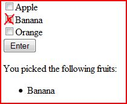

Torna alla pagina di Tecnologie Web
:: Appello d'esame di Tecnologie Web - 20/10/2008 ::
Esercizio 1
Considerate il seguente frammento XML:
<Contacts>
<Person Firstname="John"
Lastname="Smith"
Birthday="19650302"
Company="IBM"
Position="CEO"
Email="jsmith@ibm.com"/>
<Person
Firstname="Tom"
Lastname="Dunne"
Company="Today FM"
Email="tom.dunne@todayfm.com"/>
</Contacts>
1.a Scrivete un frammento XML che contenga gli stessi dati ma non utilizzi gli attributi per contenerli.
SOLUZIONE
<contacts>
<person>
<firstname>John</firstname>
<lastname>Smith</lastname>
<birthday>19650302</birthday>
<company>IBM</company>
<position>CEO</position>
<email>jsmith@ibm.com</email>
</person>
<person>
<firstname>Tom</firstname>
<lastname>Dunne</lastname>
<company>Today FM</company>
<email>tom.dunne@todayfm.com</email>
</person>
</contacts>
1.b Scrivete due XML Schema: uno per validare il presente frammento ed uno per validare il nuovo frammento da voi prodotto.
SOLUZIONE
XML SCHEMA per il testo originale:
<?xml version="1.0" encoding="UTF-8"?>
<xsd:schema xmlns:xsd="http://www.w3.org/2001/XMLSchema"
elementFormDefault="qualified">
<xsd:element name="Contacts">
<xsd:complexType>
<xsd:sequence>
<xsd:element name="Person"
maxOccurs="unbounded"
minOccurs="1">
<xsd:complexType>
<xsd:attribute name="Firstname" type="xsd:string"/>
<xsd:attribute name="Lastname" type="xsd:string"/>
<xsd:attribute name="Birthday" type="xsd:int"/>
<xsd:attribute name="Company" type="xsd:string"/>
<xsd:attribute name="Position" type="xsd:string"/>
<xsd:attribute name="Email" type="xsd:string"/>
</xsd:complexType>
</xsd:element>
</xsd:sequence>
</xsd:complexType>
</xsd:element>
</xsd:schema>
XML SCHEMA per il testo modificato:
<?xml version="1.0" encoding="UTF-8"?>
<xsd:schema xmlns:xsd="http://www.w3.org/2001/XMLSchema"
elementFormDefault="qualified">
<xsd:element name="contacts">
<xsd:complexType>
<xsd:sequence>
<xsd:element ref="person"
minOccurs="1"
maxOccurs="unbounded">
</xsd:element>
</xsd:sequence>
</xsd:complexType>
</xsd:element>
<xsd:element name="person">
<xsd:complexType>
<xsd:sequence>
<xsd:element name="firstname" type="xsd:string"/>
<xsd:element name="lastname" type="xsd:string"/>
<xsd:element name="birthday" type="xsd:int" minOccurs="0"/>
<xsd:element name="company" type="xsd:string"/>
<xsd:element name="position" type="xsd:string" minOccurs="0"/>
<xsd:element name="email" type="xsd:string"/>
</xsd:sequence>
</xsd:complexType>
</xsd:element>
</xsd:schema>
Esercizio 2
Considerate il seguente frammento XML:
<?xml version="1.0"?>
<!DOCTYPE BOOKLIST [
<!ENTITY test "testing 123">
<!ENTITY hyphen "‐">
]>
<BOOKLIST><!-- test comment -->
<BOOKS>
<ITEM TYPE="PAPERBACK" CAT='S' >
<TITLE>Number ‐ the Language of Science &test;</TITLE>
<AUTHOR><![CDATA[Smith & Jones]]></AUTHOR>
<PRICE>€5.95</PRICE>
<QUANTITY>3</QUANTITY>
<REVIEW/>
</ITEM>
</BOOKS>
</BOOKLIST>
2.a Spiegate se si tratta di un frammento ben formato oppure se sono presenti errori.
SOLUZIONE
Il frammento di codice è ben formato perché:
- la dichiarazione è corretta
- le entità sono dichiarate correttamente
- i TAG sono chiusi tutti in modo corretto rispettando l'ordine e le regole XML
- il TAG <REVIEW/> è vuoto ma è corretto perché viene chiuso subito
- i commenti sono corretti
- inoltre dato in pasto ad un programma questo dice che è ben formato :D
2.b Spiegate il ruolo ed il funzionamento delle entities e dei caratteri speciali nello standard XML.
SOLUZIONE
Un'entità è un modo per definire singoli blocchi di informazioni. Faccio riferimento ad entità esterne o interne per includerle in documenti.
Le entità vengono definite tramite la seguente sintassi:
<!ENTITY nomeEntità "testoDaSostituireAllEntità">
Una volta che l'entità viene definita è possibile utilizzarla in qualsiasi punto del documento tramite &nomeEntità;.
Esempio:
<!ENTITY super "supercalifragilistichespiralidoso">
Se per caratteri speciali intende le referenze ad entità queste servono per fare in modo che il parser interpreti determinati caratteri come desideriamo noi. Ad esempio inseriamo al posto di < la referenza &alt; perché altrimenti il parser lo interpreterebbe come inizio di un tag. Quindi se dobbiamo inserire in un testo dei caratteri che il parser potrebbe interpretare in modo scorretto li dobbiamo sottoporre a escape.
Esercizio 3
3.a Discutete le diverse funzionalità di un linguaggio di Marcatura (Markup).
SOLUZIONE
Per markup si intende: ogni mezzo per rendere esplicita una particolare interpretazione di un testo. Ex: aggiunte al testo scritto che permettono di renderlo più fruibile.
Il markup rende quindi il testo più leggibile e permette di specificare ulteriori usi del testo.
I linguaggi di markup sono i linguaggi più opportuni per strutturare e marcare i documenti in maniera indipendente dall'applicazione, favorendo la riusabilità, la flessibilità e l'apertura ad applicazioni complesse.
I TAG(etichette) sono marcatori che identificano porzioni di testo, questo permette di identificare e processare le porzioni di testo contrassegnate da una certa marcatura.
Le caratteristiche principali di un linguaggio di markup come HTML sono:
- ipertestualità
- etichettatura
- multimedialità
3.b Spiegate le differenze tra la versione 1.0 e la versione 1.1 di HTTP.
SOLUZIONE
Indipendentemente dalla versione e modalità, HTTP è un protocollo stateless, cioè senza gestione dello stato. Non mantiene memoria tra una richiesta e l'altra.
Versione HTTP 1.0:
- il protocollo utilizza connessioni non persistenti, quindi ad ogni richiesta del client il server apre una nuova connessione TCP. Questo significa che ogni sessione TCP viene chiusa dopo che il server ha risposto alla richiesta del client.
- ogni richiesta HTTP è preceduta dal 3-way handshake TCP per stabilire una connessione.
- Overhead molto elevato considerando che normali connessioni HTTP sono molto brevi e frequenti.
- Per mantenere aperta la connessione TCP si può settare il campo header connection a keep-alive.
- viene utilizzata la modalità di autenticazione Basic Authentication Scheme.
Caratteristiche Basic Authentication Scheme: il client si autentica rispetto ad un server attraverso User ID e Password che vengono inviate come un'unica stringa, separate da : e codificate in base64 come parametri dell'Header Field Authorization. La password passa in chiaro ogni volta che è necessario richiedere quella risorsa.
Versione HTTP 1.1:
- il protocollo utilizza connessioni persistenti, quindi richieste e risposte successive fluiscono all'interno della stessa connessione TCP, che non viene chiusa dal server. La connessione TCP viene chiusa dal server a seguito di un time out di inattività.
- introdotti i cookie(file testuale contenente attributi) per poter simulare lo stato di una sessione HTTP. Vengono scambiati tra client e server e contengono sempre almeno un identificatore della sessione del particolare utente. Possono servire per informazioni commerciali(pagine visitate, prodotti cercati...) e per poter effettuare autenticazione senza ripetere il login.
- viene utilizzata la modalità di autenticazione Digest Authentication Scheme.
Caratteristiche Digest Authentication Scheme: aumenta la sicurezza dell'autenticazione HTTP, poiché permette l'invio della password in modo cifrato. I componenti fondamentali sono: una funzione di hash non invertibile(MD5) per impedire che il contenuto codificato possa essere decodificato; un valore casuale(nonce) definito dal server e comunicato al client.
- ci sono due modalità di invio delle richieste al server:
- con pipeline: il client invia una richiesta al server ogni volta che trova un riferimento ad un oggetto durante il parsing.
- senza pipeline: il client invia una nuova richiesta al server dopo che è stata ricevuta la risposta alla precedente richiesta.
ovviamente è migliore la modalità con pipeline, altrimenti se una risorsa non è disponibile si rischia di rimanere bloccati
Esercizio 4
Cosa si intende per servlet mapping? Quali parametri richiede? Mostrare e spiegare un paio di esempi con formati diversi. .
SOLUZIONE
Il servlet-mapping è un elemento che fa parte del descrittore del deployment web.xml che deve contenere tutte le definizioni necessarie per l'applicazione tra cui:
- lista di servlet
- URL associata all'invocazione di ogni servlet, che otteniamo tramite l'elemento
servlet-mapping
La servlet-mapping quindi associa una URL alla servlet.
Richiede:
- <servlet-name>: elemento che identifica il nome della servlet precedentemente dichiarata.
- <url-pattern>: elemento che definisce il pattern usato per determinare quale servlet debba essere invocata.
Ci sono due formati possibili:
- Match con pattern esatto: il pattern inizia con /, e può contenere di seguito qualunque cosa. Usato per mapping uno-a-uno per una richiesta ad una specifica servlet.
- Match per estensione: *.extension. Tutte le URL che terminano con una specifica estensione sono indirizzate ad una specifica servlet.
Esempi:
- path mapping: inizia con "/" e termina con "/*". In mezzo può esserci qualunque cosa. Serve per indirizzare ad una specifica servlet tutto ciò che si trova in una certa directory.
"/myservlet/*": è possibile invocare la servlet con qualunque URL contenente /myservlet/
- servlet di default: "/". Viene invocata tutte le volte che non viene trovato un match per una URL.
Esercizio 5
Servlet e JSP. Confrontare queste due tecnologie, specificando il rapporto e le differenze esistenti.
SOLUZIONE
Sono tecnologie complementari per la produzione di contenuti dinamici.
Il funzionamento delle JSP è simile a quello delle Servlet.
Le JSP sono codice HTML + frammenti di codice Java, mentre le Servlet sono formate solo da codice Java.
Il container esegue automaticamente il deploy della JSP con la corrispondente URL.
Ogni JSP inoltre viene automaticamente tradotta in Servlet dal container, ciò che viene eseguito è sempre una Servlet, ma il codice Java è prodotto automaticamente dal container.
Esercizio 6
Spiegare il funzionamento e commentare dettagliatamente il seguente pezzo di codice (loop.jsp).
<%@ page language="java" contentType="text/html" %>
<html>
<body bgcolor="white">
<form action="loop.jsp">
<input type="checkbox" name="fruits" value="Apple">Apple<br>
<input type="checkbox" name="fruits" value="Banana">Banana<br>
<input type="checkbox" name="fruits" value="Orange">Orange<br>
<input type="submit" value="Enter">
</form>
<%
String[] picked = request.getParameterValues("fruits");
if (picked != null && picked.length != 0) {
%>
You picked the following fruits:
<ul>
<%
for (int i = 0; i < picked.length; i++) {
out.println("<li>" + picked[i]);
}
%>
</ul>
<% } %>
</body>
</html>
- Cos’è uno scriptlet?
- Mostrare un esempio di schermata di output.
SOLUZIONE
Questo pezzo di codice genera una pagina jsp con contenuto HTML in cui vengono visualizzate delle checkbox con il nome di alcuni frutti e viene chiesto di scegliere tra essi. Poi le scelte effettuate vengono passate ad un array di stringhe tramite il comando getParameterValues. Con un if viene controllato se è stato scelto qualcosa e tramite un ciclo for le scelte vengono stampate a video.
Dopo aver premuto il pulsante di Enter presente nella pagina vengono poi visualizzati i frutti scelti.
La form ha come action la pagina stessa (loop.jsp).
- Gli scriptlet sono frammenti di codice java definiti con la sintassi <% codice %>. Non richiedono dichiarazioni di classi o metodi e sono adatti per inserire cicli, condizioni e comunque funzionalità semplici, come nel codice sopra che c'è un ciclo for
- 
Output dopo aver scelto Banana e premuto il bottone della form.
Torna alla pagina di Tecnologie Web